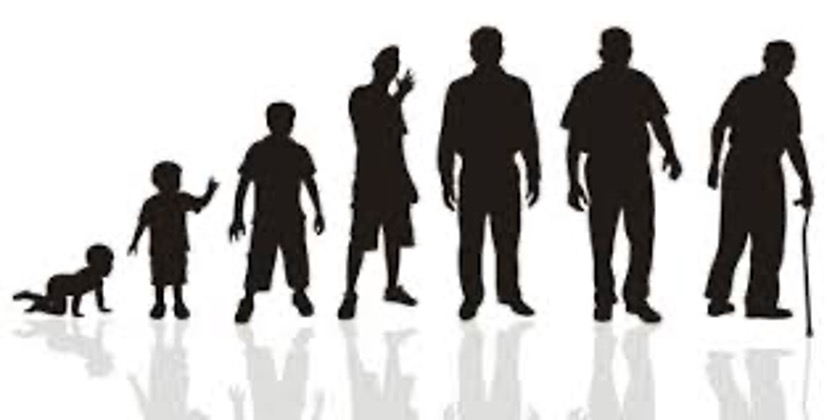
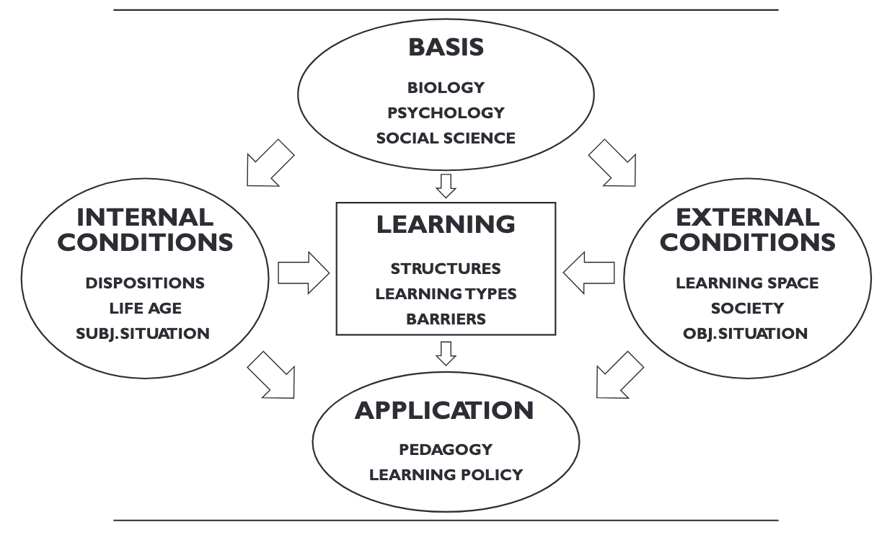
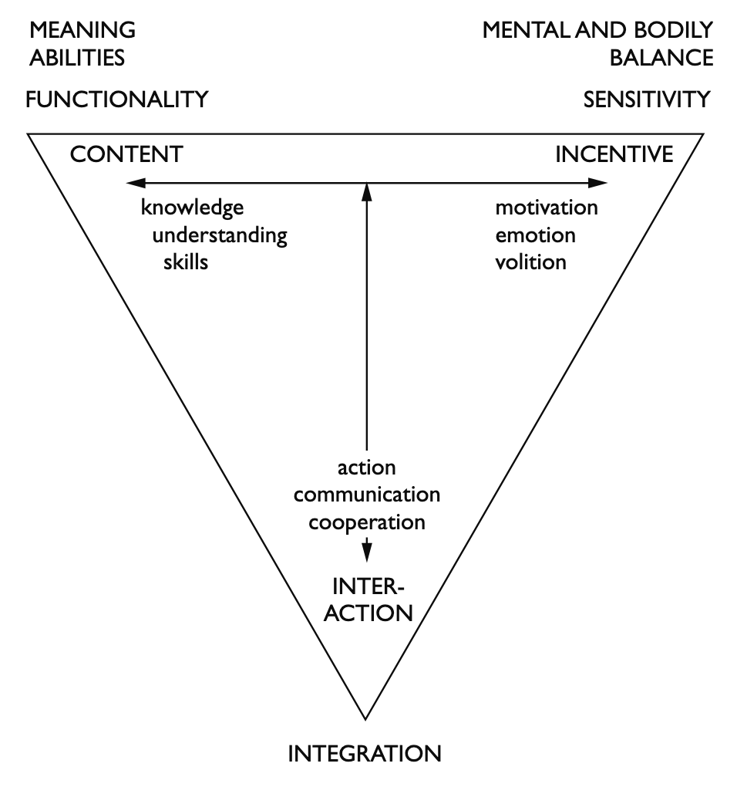
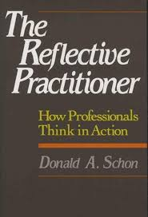
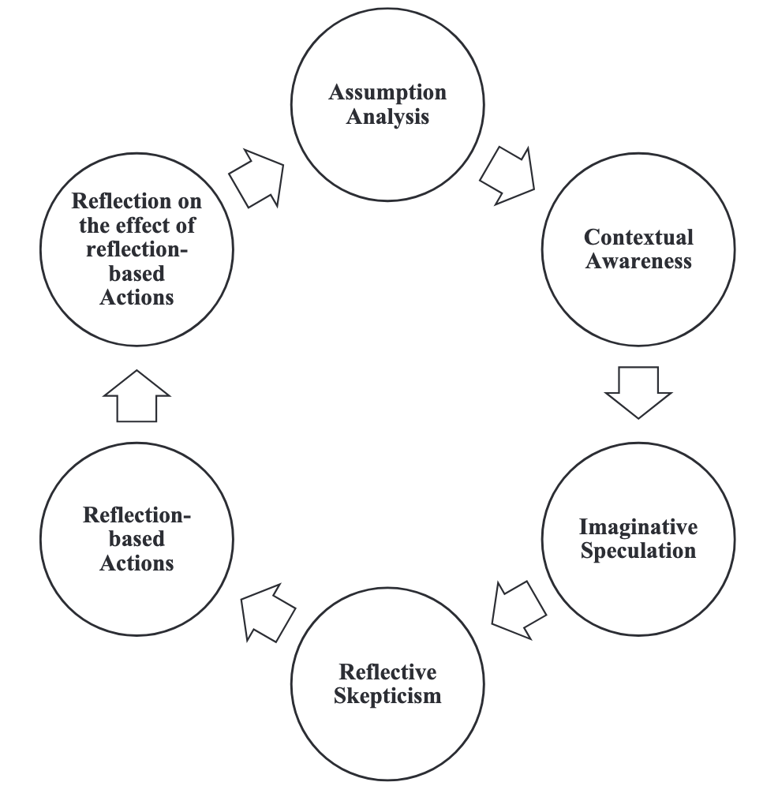

Entwicklungs- und lerntheoretischer Blick auf Transitionen
Dr. Christof Nägele · Uni Basel & PH FHNW
Einführung
Wie kann man Jugendliche oder junge Erwachsene in Transitionen am besten unterstützen, mit Fokus auf Lernen und Entwicklung?
Sicher ist, dass es zunehmend mehr darauf ankommt, dass jeder Mensch seine eigene Biographie sowohl im persönlichen und sozialen als auch im beruflichen Bereich gestalten und steuern kann.
Allerdings kommt es heute darauf an, diesen Prozess nicht nur von seinem Ergebnis her zu sehen. Viel wichtiger ist, ihn selbst als eine persönliche Entwicklungschance zu begreifen und pädagogisch zu nutzen.
Eckert, M. (2008). Defizite in der Berufsvorbereitung—Was ist ein gelingender Übergang von der Schule in den Beruf? In E. Schlemmer & H. Gerstberger (Eds), Ausbildungsfähigkeit im Spannungsfeld zwischen Wissenschaft, Politik und Praxis (pp. 149–159). VS Verlag für Sozialwissenschaften.
career as life process
Career is about an ongoing process that accompanies the person’s entire life.
career as individual agency
If career is recognised as a life process, it is vital to identify and understand the human participation in this process.
career as meaning making
one’s life career development means a very complex and dynamic person-in-context process.

Unter Entwicklung versteht man im Allgemeinen einen Prozess der Entstehung, der Veränderung bzw. des Vergehens, wobei drei Prinzipien zu Grunde liegen: das Prinzip des Wachstums, das Prinzip der Reifung und das Prinzip des Lernens.
Stangl, W. (2021). Stichwort: Entwicklung. Online Lexikon für Psychologie und Pädagogik. https://lexikon.stangl.eu/12182/entwicklung (2021-03-02)
Als Reifung Vorgänge klassifiziert, die aufgrund endogen vorprogrammierter und innengesteuerter Wachstumsprozesse einsetzen und auch im weiteren Verlauf größtenteils von diesen gesteuert werden. Alle Vorgänge der Reifung sind letztlich durch Vererbung determiniert, wobei exogene Faktoren wenig bis gar keinen Einfluss auf die Reifung ausüben.
Stangl, W. (2021). Stichwort: Reifung. Online Lexikon für Psychologie und Pädagogik. https://lexikon.stangl.eu/1842/reifung#comments (2021-03-02)
Individuals in the knowledge societies at the beginning of the 21st century must realize that career problems are only a piece of much broader concerns about how to live a life in a postmodern world shaped by a global economy and supported by information technology.
Savickas, M. L., Nota, L., Rossier, J., Dauwalder, J.-P., Duarte, M. E., Guichard, J., Soresi, S., Van Esbroeck, R., & van Vianen, A. E. M. (2009). Life designing: A paradigm for career construction in the 21st century. Journal of Vocational Behavior, 75(3), 239–250. https://doi.org/10.1016/j.jvb.2009.04.004
Life-designing intervention
Savickas, M. L., Nota, L., Rossier, J., Dauwalder, J.-P., Duarte, M. E., Guichard, J., Soresi, S., Van Esbroeck, R., & van Vianen, A. E. M. (2009). Life designing: A paradigm for career construction in the 21st century. Journal of Vocational Behavior, 75(3), 239–250. https://doi.org/10.1016/j.jvb.2009.04.004
Unter Lernen versteht man den absichtlichen oder den beiläufigen, individuellen oder kollektiven Erwerb von geistigen, körperlichen, sozialen Kenntnissen, Fähigkeiten und Fertigkeiten. Lernen bedeutet, die Zukunft vorhersagen zu können und das Verhalten dementsprechend anzupassen.
Stangl, W. (2021). Stichwort: Lernen. Online Lexikon für Psychologie und Pädagogik. https://lexikon.stangl.eu/551/lernen/ (2021-03-02)
Illeris, K. (2008). Lernen umfassend verstehen. In 26° Curso Seminario Internacional de Estudios sobre la Formación Profesional y la Enseñanza en el Sector de la Agricultura(August).

Illeris, K. (2009). A comprehensive understanding of human learning. In K. Illeris (Ed.), Contemporary theories of learning: Learning theorists … In their own words (pp. 7–20). Routledge.
Illeris, K. (2008). Lernen umfassend verstehen. In 26° Curso Seminario Internacional de Estudios sobre la Formación Profesional y la Enseñanza en el Sector de la Agricultura(August).

Illeris, K. (2009). A comprehensive understanding of human learning. In K. Illeris (Ed.), Contemporary theories of learning: Learning theorists … In their own words (pp. 7–20). Routledge.
Inhaltliche Dimension von Wissen, Verstehen, Fähigkeiten, Können, Verhaltensweisen, Arbeitsmethoden, Werten etc.
Emotionale Dimension von Gefühlen, Motivation und Wollen.
Soziale Dimension von Interaktion, Kommunikation und Kooperation – die alle in einen gesellschaftlichen Kontext eingebettet sind.
Illeris, K. (2008). Lernen umfassend verstehen. In 26° Curso Seminario Internacional de Estudios sobre la Formación Profesional y la Enseñanza en el Sector de la Agricultura(August).
Throughout most of history, teaching and learning have been based on apprenticeship. Children learned how to speak, grow crops, construct furniture, and make clothes. But they didn’t go to school to learn these things; instead, adults in their family and in their communities showed them how, and helped them do it…
Collins, A. (2006). Cognitive apprenticeship. In K. R. Sawyer (Ed.), The Cambridge handbook of the learning sciences. Cambridge University Press.
The defining characteristic of a situative approach is that instead of focusing on individual learners, the main focus of analysis is on activity systems: complex social organizations containing learners, teachers, curriculum materials, software tools, and the physical environment.
From the situative perspective, all socially organized activities provide opportunities for learning to occur, including learning that is different from what a teacher or designer might wish.
Greeno, J. G. (2006). Learning in activity. In K. R. Sawyer (Ed.), The Cambridge handbook of the learning sciences. Cambridge University Press.

Cattaneo, A. A. P., & Motta, E. (2021). “I reflect, therefore I am… a good professional”. On the relationship between reflection-on-action, reflection-in-action and professional performance in vocational education. Vocations and Learning, 14(2), 185–204. https://doi.org/10.1007/s12186-020-09259-9
Transformative learning is defined as the process by which we transform problematic frames of reference (mindsets, habits of mind, meaning perspectives) – sets of assumption and expectation – to make them more inclusive, discriminating, open, reflective and emotionally able to change.
Mezirow, J. (2009). An overview on transformative learning. In K. Illeris (Ed.), Contemporary theories of learning: Learning theorists … In their own words (pp. 90–105). Routledge.
Liu, K. (2020). Critical reflection for transformative learning: Understanding e-portfolios in teacher education. Springer International Publishing. https://doi.org/10.1007/978-3-319-01955-0

Liu, K. (2020). Critical reflection for transformative learning: Understanding e-portfolios in teacher education. Springer International Publishing. https://doi.org/10.1007/978-3-319-01955-0
Lektüre
Hoggan, C., Hoggan-Kloubert, T., & Kraus, K. (2026). Life transitions, daily living, and transformative learning: Insights from a migration journey. In M. Bernhard, S. Billett, C. Hof, V. J. Marsick, & P. H. Sawchuk (Eds), Adult education in changing times (pp. 187–202). Routledge.
Keane, M., Khupe, C., & Mpofu, V. (2022). Reflections on transformation: Stories from Southern Africa. In A. Nicolaides, S. Eschenbacher, P. T. Buergelt, Y. Gilpin-Jackson, M. Welch, & M. Misawa (Eds), The Palgrave handbook of learning for transformation (pp. 521–536). Springer International Publishing. https://doi.org/10.1007/978-3-030-84694-7_29
Wie, und von wem, kann Unterstützung im Übergang von Sek I über Sek II in Erwerbsarbeit oder Tertiärbildung als lern- und entwicklungsorientierter Prozess gestaltet werden, der Reflexion, Transformation und Identitätsentwicklung ermöglicht?
Reflection and introspection
| 1. Trigger & Disruption |
• Disorienting dilemma • Self-examination (incl. emotions) Something disrupts existing meaning structures. |
| 2. Critical Reflection |
• Critical assessment of assumptions • Recognition of shared experiences Old perspectives are questioned and relativised. |
| 3. Exploration & Planning |
• Exploration of new roles/actions • Planning a course of action • Acquiring knowledge and skills New possibilities are considered and prepared. |
| 4. Experimentation |
• Trying out new roles New ways of being are tested in practice. |
| 5. Integration |
• Building competence and confidence • Reintegration with a transformed perspective The new perspective becomes part of everyday life. |
Mezirow, J., & Associates. (2000). Learning as transformation: Critical perspectives on a theory in progress. Jossey-Bass Publishers.
Constructivist perspective
Transformative learning is seen as a process in which individuals actively construct new meanings by critically reflecting on their experiences, revising prior assumptions, and integrating new understandings into their worldview.
Psychoanalytic perspective
Transformative learning is understood as a process that involves uncovering and working through unconscious emotions, desires, and inner conflicts, allowing deeper shifts in identity and meaning-making beyond purely rational reflection.
Situative perspective
Transformative learning is understood as emerging through participation in social practices and contexts, where meaning is shaped in interaction with the environment.
Transformative learning is deeply embedded within specific contexts and unfolds through interactions with the environment and other people.
This approach is particularly relevant when examining significant life changes
Transformative learning includes emerging from closed worlds to expanded understandings and connections. Escaping from fixed and limiting, or biased views, requires not only “Border-crossing”, but a transcending of borders. Transformative learning starts with the individual and is shaped by our different environments. We move from within our own inner and outer context to a new position of understanding. In this, our learning moves us toward liberation from limiting perspectives.
Humans are storytelling beings who, individually and socially, lead storied lives.
Lektüre
Wenger, E. (2009). A social theory of learning. In K. Illeris (Ed.), Contemporary theories of learning: Learning theorists … In their own words (pp. 209–218). Routledge.
Bernhard, M., Billett, S., & Kraus, K. (2026). Learning at the nexus of life course, work, and transitions. In V. J. Marsick & P. H. Sawchuk, Adult education in changing times (1st edn, pp. 29–45). Routledge. https://doi.org/10.4324/9781003584384-4
Lernen ist ein sozialer Prozess, in dem Menschen durch Teilnahme (participation) an gemeinsamer Praxis (practice) Bedeutung (meaning) aushandeln und ihre Identität (identity) entwickeln.
|
Lernen ist soziale Teilnahme (learning as social participation) |
Eine Lernende versteht einen Inhalt besser, indem sie mit anderen diskutiert, Fragen stellt und gemeinsam Aufgaben löst. |
|
Praxisgemeinschaften (communities of practice) |
Eine Gruppe von Lernenden entwickelt gemeinsam Strategien, wie sie Aufgaben lösen oder sich auf Prüfungen vorbereiten. |
|
Lernen als Identitätsentwicklung (identity formation) |
Eine Person beginnt sich selbst als „jemand, der das versteht“ oder „der das nicht kann“ zu sehen. |
|
Bedeutung durch Teilnahme und Vergegenständlichung (participation & reification) |
Eine Gruppe entwickelt gemeinsam Materialien, Dokumente oder Modelle, die ihre Erfahrungen strukturieren und verständlich machen. |
|
Praxis (practice) |
Lernende übernehmen typische Vorgehensweisen, z. B. wie man ein Problem analysiert oder eine Aufgabe strukturiert. |
|
Vom Rand zur Teilhabe (legitimate peripheral participation) |
Eine Person beteiligt sich zunächst wenig und beobachtend und bringt sich später aktiv in Diskussionen ein. |
|
Lernen als Prozess über Zeit (trajectories) |
Eine Lernende entwickelt sich von einem ersten Verständnis hin zu sicherem Anwenden eines Konzepts. |
|
Lernen an Grenzen zwischen Gemeinschaften (boundaries / boundary crossing) |
Eine Person merkt, dass Wissen aus einem Kontext (z. B. Schule) anders angewendet werden muss als in einem anderen Kontext (z. B. Praxis). |
| Activity | Example |
|---|---|
| Problem solving | “Can we work on this design and brainstorm some ideas; I’m stuck.” |
| Requests for information | “Where can I find the code to connect to the server?” |
| Seeking experience | “Has anyone dealt with a customer in this situation?” |
| Reusing assets | “I have a proposal for a local area network I wrote for a client last year. I can send it to you and you can easily tweak it for this new client.” |
| Coordination and synergy | “Can we combine our purchases of solvent to achieve bulk discounts?” |
| Discussing developments | “What do you think of the new CAD system? Does it really help?” |
| Documentation projects | “We have faced this problem five times now. Let us write it down once and for all.” |
| Visits | “Can we come and see your after-school program? We need to establish one in our city.” |
| Mapping knowledge and identifying gaps | “Who knows what, and what are we missing? What other groups should we connect with?” |
Wenger, E. (2011). Communities of practice: A brief introduction.
Übergänge können als Prozesse verstanden werden, in denen sich Individuen zwischen Praxisgemeinschaften bewegen und dabei ihre Teilnahme, Bedeutungszuschreibungen und Identität neu aushandeln.
| Konzept | Beispiel | Konsequenz |
|---|---|---|
| Übergänge = Wechsel zwischen Praxisgemeinschaften |
• Schule → Betrieb • Sek I → Sek II |
Eintritt in neue Gemeinschaften mit anderen Praktiken |
| Lernen als Bewegung (Trajektorien) | Übergänge sind keine punktuellen Ereignisse: Entwicklungsprozesse über Zeit | Es braucht genügend Zeit |
| Identität im Zentrum | von „Schüler:in“ → „Lernende:r / Fachperson | Es geht nicht nur um Fachwissen, Informationen |
| Grenzen zwischen Gemeinschaften (Boundaries) |
Übergänge = Grenzübertritte • unterschiedliche Erwartungen • unterschiedliche Praktiken • unterschiedliche Kulturen |
Missverständnisse Anpassungsprobleme |
| Vermittlung zwischen Kontexten |
erfolgreiche Übergänge brauchen: Brücken (boundary crossing) Personen, die vermitteln (broker) |
Lehrer:innen, Berufsbildner:innen |
| Teilnahme neu verhandeln | Lernende müssen: • ihre Rolle neu finden • ihren Platz in der neuen Gemeinschaft klären | von peripherer Teilnahme → zu aktiver Beteiligung |
Domain
Identity defined by a shared domain of interest.
Community
Members of a community engage in joint activities and discussions, help each other, and share information
Practice
They develop a shared repertoire of resources: experiences, stories, tools, ways of addressing recurring problems.
Wenger, E. (2011). Communities of practice: A brief introduction.
A social theory of learning
Wie kann man Jugendliche/junge Erwachsene im Übergang Sek I -> Sek II -> Arbeit/Tertiär am besten unterstützen, wenn der Fokus auf Lernen und Entwicklung liegen soll?
Übergänge sind mehr als Entscheidungen
Sinn- und Bedeutungsfragen einbeziehen
Zugang zu Praxis
Schnupperlehre, Praktika, erfahrungsbasierte Formate, aktive Auseinandersetzung
Zugehörigkeit
soziale Integration im Betrieb / Schule, Unterstützung beim „Dazugehören“
Übergänge sind Identitätsprozesse
Identitätsentwicklung unterstützen, nicht nur Informationen liefern
Unterschiedliche Lernlogiken treffen aufeinander
Brüche und Anpassungsprozesse
Übergänge als Aushandlungsprozesse
Begleitung, Reflexionsräumen
Processes: learning taking place in biographies, everyday life, and liminal spaces
Contexts: relationships with institutions, organisations, and society
Qualities: positionality, translation, and relating knowledge and experience
Learning emerges at the intersection (“nexus”) of three domains:
• the life course (biography, personal development)
• work (labour market, practice, occupations)
• transitions (changes between roles, contexts, statuses)
Learning cannot be understood without considering all three together.
| Argument | Detail | Takeaway |
|---|---|---|
| Learning is relational and situated | Learning is shaped by the interaction between individual agency and social structures (institutions, norms, work contexts). | It is not purely individual, but co-constructed in context. |
| Transitions are key moments for learning | Life transitions (e.g. entering work, changing jobs, migration) create uncertainty, disruption, and a need for adaptation. | These moments trigger learning processes. |
| Learning is embedded in the life course | Learning is linked to biography, past experiences, and future expectations. | Individuals interpret transitions through their life histories. |
| Work is a central site of learning | Work is not just application of knowledge; it is a primary context for learning and development. | Learning occurs through participation, practice, and engagement in work activities. |
| Transitions are negotiated, not given | Individuals actively interpret and deal with transitions; outcomes depend on personal resources and social conditions. | Learning = coping with and shaping change. |
| Multiple levels interact | Interaction between societal change, institutional structures, and individual experiences. | Learning happens in this multi-level interplay. |
Learning at the Nexus of Life Course, Work, and Transitions
Wie kann man Jugendliche/junge Erwachsene im Übergang Sek I -> Sek II -> Arbeit/Tertiär am besten unterstützen, wenn der Fokus auf Lernen und Entwicklung liegen soll?
Lebenslauf → Biografie zählt
Erfahrungen, Erwartungen, Selbstkonzepte
Arbeit → Lernen durch Teilnahme
konkrete Tätigkeiten, Teilnahme an Praxis
Übergang → Auslöser für Lernen
Unsicherheit, neue Anforderungen
Übergänge müssen ausgehandelt werden
Rolle klären, Erwartungen interpretieren
Zusammenspiel von Struktur und Individuum
Möglichkeiten (Lehrstelle, Unterstützung, individuellem Engagement
Illeris, K. (2014). Transformative learning and identity. Journal of Transformative Education, 12(2), 148–163. https://doi.org/10.1177/1541344614548423
Urpi, C., & Gamarra, M. (2022). Preventing adolescence through educational counselling on personal and vocational identity. Journal of Health Care Education in Practice, 4(11/2022), 31–40. https://doi.org/10.14658/pupj-jhcep-2022-2-4
Kegan’s (2000) very direct question has never been answered clearly and satisfactorily!
The question was:
What exactly is it that changes in transformative learning?
“For the new generations growing up since the 1980s, the task or duty of creating, maintaining, and changing their own identities has become increasingly important and fundamental. Who am I? Who do I want to be? How can I fulfill my dreams? The possibilities may be great and never ending for some. But for others, the many choices can become a strain, a continuous demonstration of their insufficient individual capacity to make things function.” ([Illeris, 2014, p. 155]
(zotero://select/library/items/W6ZEFPGE)) (pdf)
Shift: from thinking differently → to being different
More comprehensive than purely cognitive models
Childhood
no real transformative learning
Youth
identity formation begins
Adulthood
main phase of transformative learning
Transformative learning is not just changing what we think,
but transforming who we are in relation to ourselves and society.
Transformative learning and identity
Wie kann man Jugendliche/junge Erwachsene im Übergang Sek I -> Sek II -> Arbeit/Tertiär am besten unterstützen, wenn der Fokus auf Lernen und Entwicklung liegen soll?
Key question:
How educational and vocational counselling can support adolescents in developing personal and vocational identity under conditions of stress and uncertainty.
Central questions
Who am I? Who do I want to become? With whom do I want to spend my life? Which values and principles guide me?
Key influences
Lacking resources
Consequence
OK, but: “In short, starting with the necessary support from the family, school and society, young people need professional means to provide vocational guidance in order to undertake on their own the personal and professional project they really want to develop.”
“Vocational guidance helps the young person to identify the main difficulties they may encounter at the end of the school stage and to face the process of choosing higher academic or professional studies; it helps them to reflect on what measures can facilitate this process, after becoming aware of what they like, what they dream of and where they would like to see themselves in a few years’ time.”
Personal and Vocational Identity
Wie kann man Jugendliche/junge Erwachsene im Übergang Sek I -> Sek II -> Arbeit/Tertiär am besten unterstützen, wenn der Fokus auf Lernen und Entwicklung liegen soll?